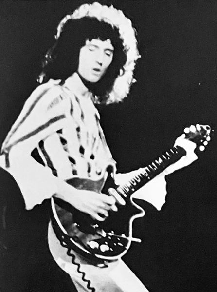
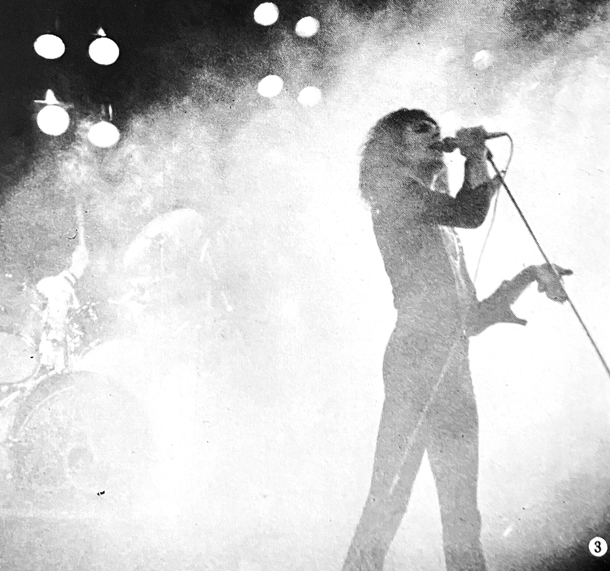

Vol. 2 — Winter 1976

The fan connections pages continued to grow as fans across Japan used this column as a hub for building secondary clubs and circles. The want ads include the following:

Anyone who may have recorded the band's appearance on Young Echo on tape: Would you be willing to send it to me? I'll be sure to return it to you!
If you have any genuine autographs of one or all members of Queen, please let me have them. If you want money I'll buy them for around ¥300-400 each [only 6-8 USD in 2025]! Please contact me by postcard first if you're willing to sell to me. Regards to all the wonderful Queen fans out there!
To anyone who may have taken photos of Brian when he was here in Japan: I'm looking to purchase your negatives for a fair price. If you don't need the money, I can trade you a pinup of Roger!
I bought a brown clutch fan club bag with the Queen logo and the names of all four members on it, but I've never used it. It's 32 cm tall and 39 cm wide. It was ¥2,000 [~40 USD in 2025] and I'd like to sell it for this price if possible. Please contact me by postcard.
The Christmas Queen Fan Club Meetup